Let’s consider a VR game when you have to avoid projectiles to win. When you have to walk in a VR environment, there’s a risk to run into walls or different objects. This type of accident, present from the very first seconds of the video, is probably the most frequent.
Solution :
For the second scenario, let’s consider sports games. In these games, you can practice boxing, bowling, golf, football, ... You may have to perform large movements with your legs and/or arms. This can lead to accidental injury to humans or animals passing close to the player.
Solution :
Unlike Head-Mounted displays, the CAVE system does not cover the eyes of the user. It just displays the virtual environment of the user on fixed screens, and not in a headset. The user can move in a fixed area and see all physical objects in it, including its own body. This technology can take into account the orientation of the player's head thanks to a device placed on the user.
Advantages of the CAVE system :
Disadvantages of the CAVE system :
Common disadvantages with VR headsets :
About the place of the CAVE system in the Reality-Virtuality Continuum In the Cave system, the user sees all objects present in the room he is. The rest is displayed on screen. This should lead us to think of it as augmented reality. However, virtual items are displayed in all direction, providing more virtuality than usual augmented reality technologies, that only include a few virtual items in the real world. For these reasons, the CAVE system should be located between Augmented Reality and Augmented Virtuality.
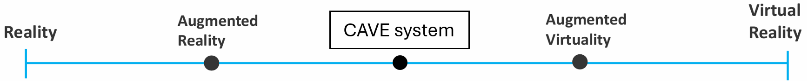When more people are experiencing the CAVE system at the same time, they can interact between them. This adds more place for real interactions to the experience. Thus, the CAVE system should be considered closer to the Augmented Reality :
The goal of this homework is to present 3 different VR selection techniques and classify them.
I saw this selection technique on this video. It comes from the paper : "FistPointer: Target Selection Technique using Mid-air Interaction for Mobile VR Environment" (Unfortunately, I did not find a free access to the PDF.)
This technique has been designed for use in a mobile VR environment, where there is no hand controller. The user moves his hands, with thumbs up, to control the point to target on the screen. When he's satisfied, he lowers his his thumb to confirm.
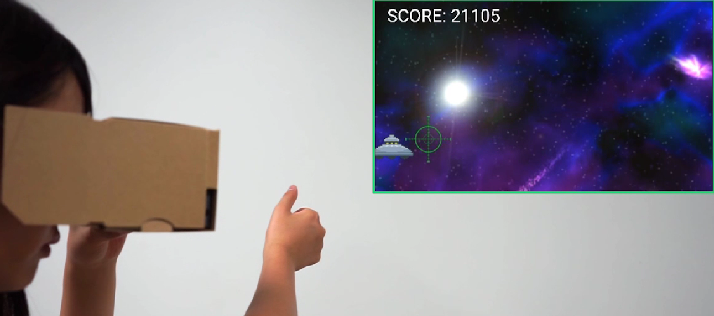 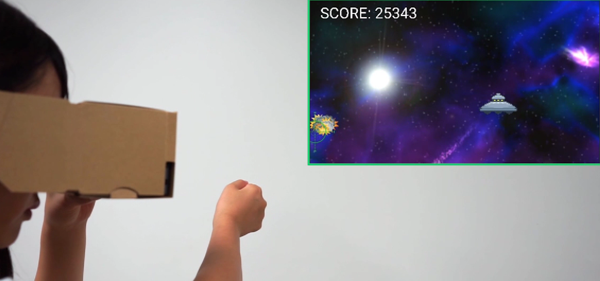This selection techniques comes from the paper : "GazeRayCursor: Facilitating Virtual Reality Target Selection by Blending Gaze and Controller Raycasting" and is presented in this video.
The idea is to combine gaze direction and ray direction casted by the controller to determine the targeted point.
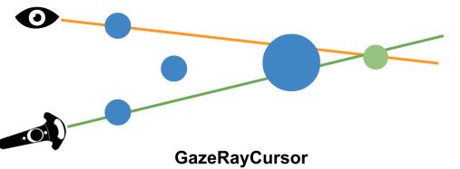The controller cast a ray and the user moves his eyes to adjust the selction along this ray by looking more or less far. In the following image, we see the ray casted and the red point represent the guessed intersection point between this ray and the user's gaze.
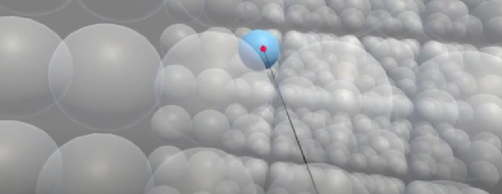This selection techniques comes from the paper : "Slicing-Volume: Hybrid 3D/2D Multi-target Selection Technique for Dense Virtual Environments " and is presented in this video.
The idea is to select all elements in a parallelepiped. The dimensions of this parallelepiped can be adjusted by the user.
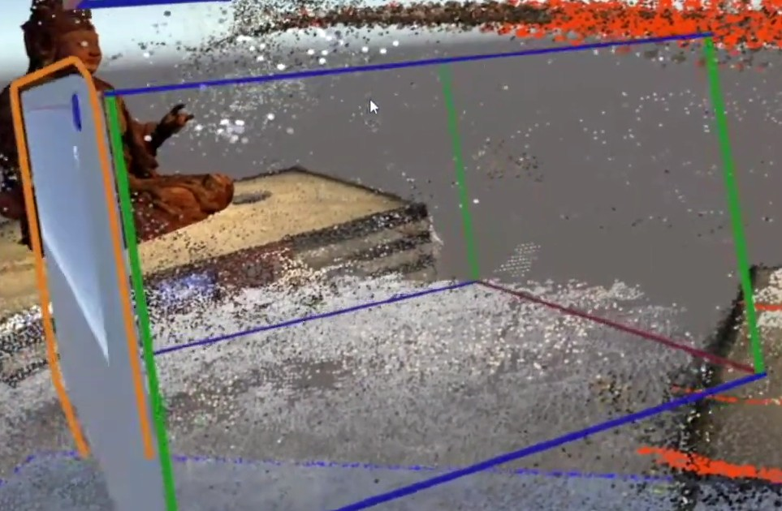The user can then move the tablet and visualize what's inside the parallelepiped.
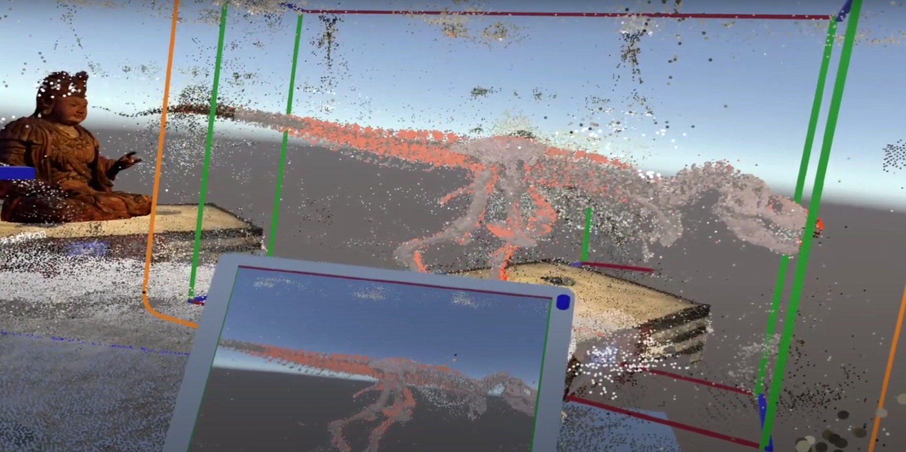For this homework, we have to prepare a 5-minute presentation about a novel locomotion technique in VR. This technique doesn't need to be realistic and we won't have to implement it.
You can see the presentation slides on this.
My locomotion technique is a plank on wheels controlled with a thruster and a handbreak.
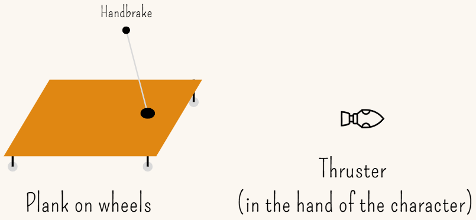The character uses the thruster to move forward and the handbreak to slow and stop the plank
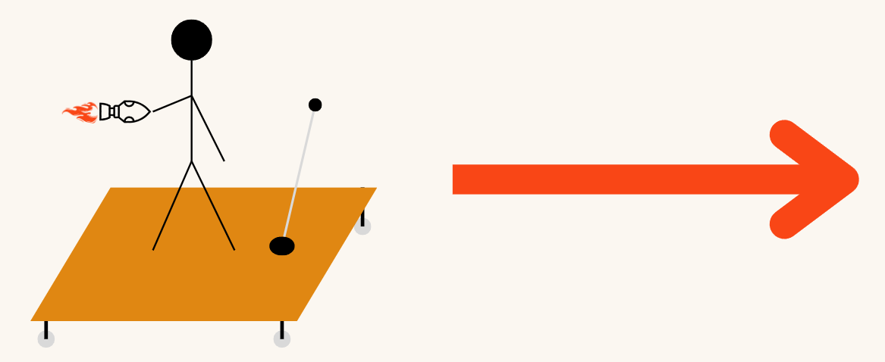 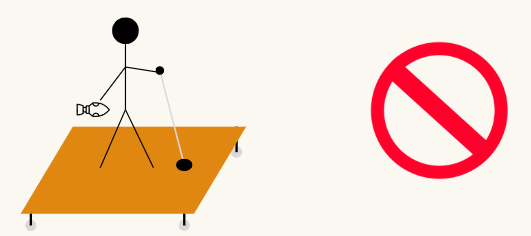I found two situations where this locomotion technique can be used
To create my blog, I first wanted to use hugo as adviced by the course. I finally prefered to do the blog in my own html/css because I already knew quite a bit about these languages. The style is simple, with a navigation bar on the left and the content on the right, all in a single page.
To host this blog on the Internet, I quickly considered to use GitHub pages. I'm already using GitHub for a couple of years and it was for me the simplest solution. So I read the tutorials (+ some precisions on the Internet) and I was done pretty easily.
I never used Unity or similar tool (I've heard of Godot but I never used it) before. Howerver, the setup was not very hard. The tutorial given by the professor was clear and straight. The interface of Unity Hub is intuitive. I easily installed the last version with required modules.
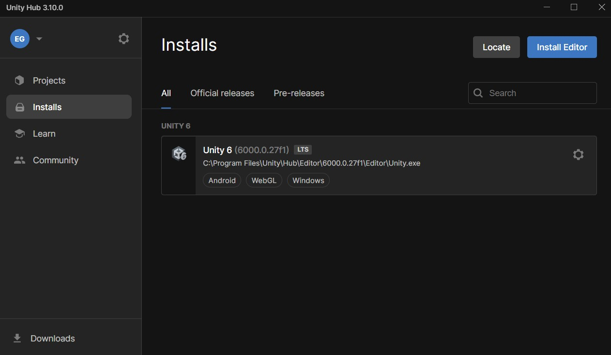I never used the Unity editor before, so I created a new universal 3D project and followed the introduction tutorial for the Unity editor in preparation to the next Lab.
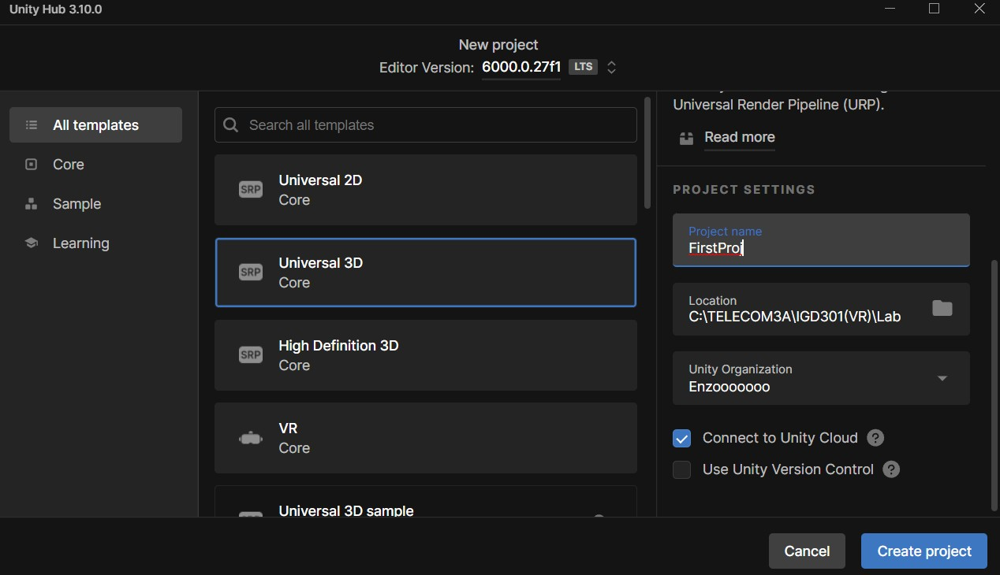It helped me to learn how to navigate into the Unity editor, create new objects in my scene, apply physics, add characters and objects (The tutorial gives a lot of prefabs to fill the scene)
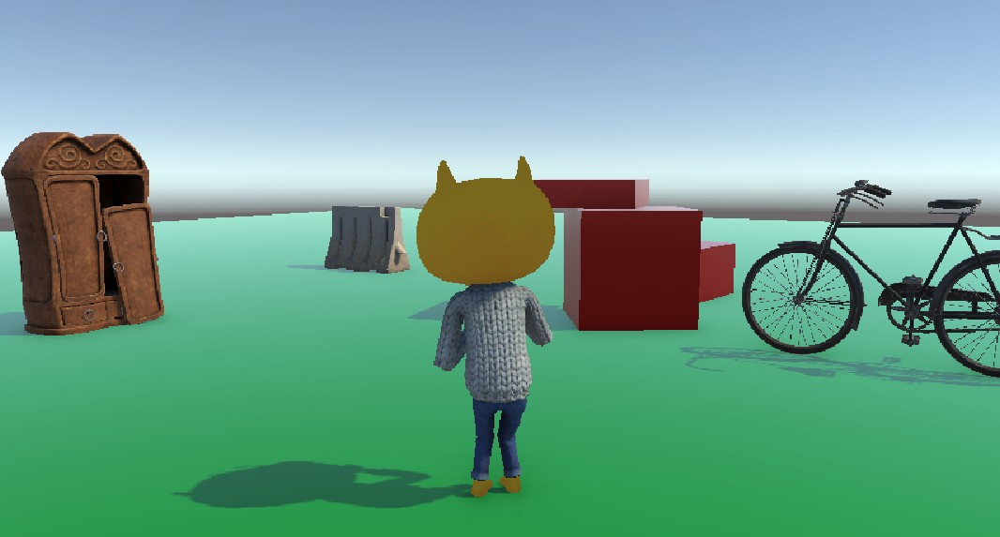For this second lab, we had to create a simple Roll-a-Ball game by following the tutorial on the Unity website. I'll depict the different steps I followed to create the game.
I created a new 3D project using the universal 3D template.
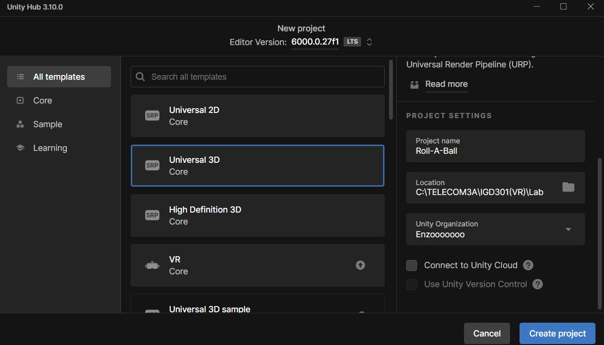Here is the list of my projects after creating this one.
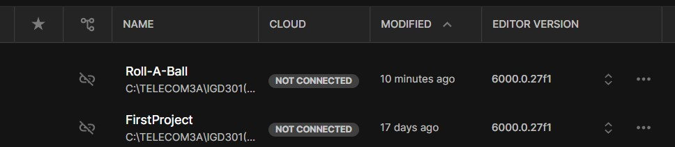Once in my newly created project, the tutorial suggest us to choose the default layout of the editor, suitable for beginners.
Then, we must create our scene and add the first objects in it : the ground (a plane) and the player (a sphere). We also have to create materials to give them a color and an aspect. We basically just choose the color (Base Map) and the smoothness of the material, as shown in the following image :
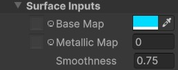We then apply it by dragging it on the object.
In this step, we learn how to move the player by writing our first C# scripts.
First, our player has to be considered as a rigid body, so we must add a RigidBody component to it so we can later apply forces to it.
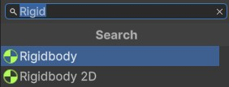We must then add an Input Player component to acces to key actions. Finally, we write a script to retrieve key actions and apply forces to the player in consequence.
The goal of this step is to place the camera as we want and write a new script to adapt the camera movement to the player movement.
In this step, we add walls to define the play area.
We start to implement the mechanics of the game. The player will have to collect pickups to win. So we start by adding them to the game area. We also them an rotating animation.
We then add conditions to make the collectibles disappear on collision.
We want to display the number of pickups the player has to collect to win, and text for win.
On this almost last step, we want to create an ennemy that chases the player.
Then, we add more obstacles (static or dynamic) and refine the scripts so the player loses when the enemy catches it. And here is the final game :
The very last step is to build the game for the computer. For that, we follow the instructions in the Unity tutotrial.